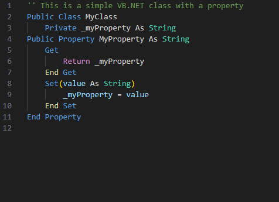
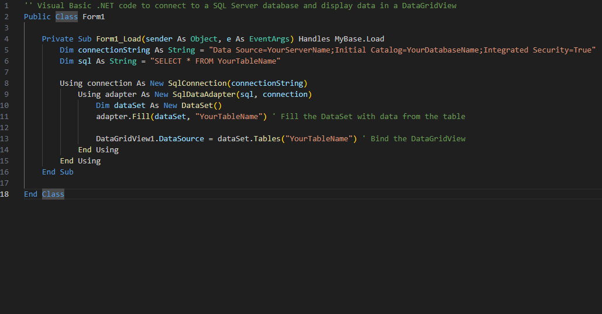

Classic WinForms Desktop UI

Straightforward VB.NET Code

DB Integration with VB.NET
Dive into the world of Visual Basic .NET with these clean, practical, and beginner-to-advanced level projects. Whether you're automating tasks, building WinForms apps, or integrating with databases, there's something here for every dev.